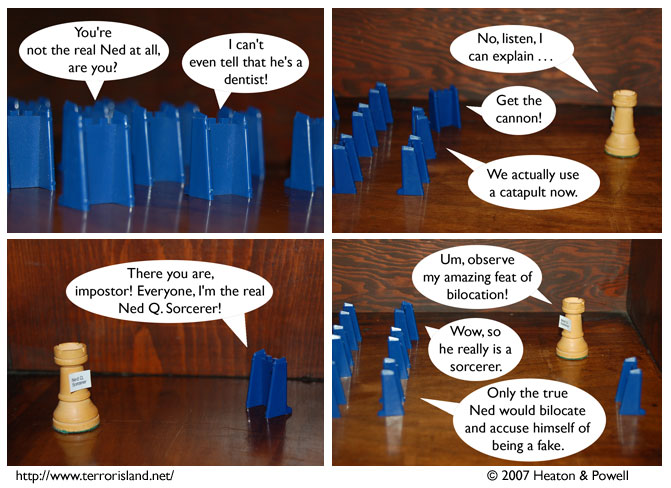

Strip #136
— Wednesday, April 25, 2007
Don’t you hate how the guys in front are always the only ones who speak up at lectures?
Notes, Thoughts, &c.
Ben’s Notes
Looks like Stephen’s got himself into another fix here. Taking credit for bilocation’s some nice fast thinking, but we’ll just see how long that lasts him. That crowd’s pretty unruly, and I’ve got a feeling the real Ned might have a few things to say himself.
Lewis’s Notes
Some people think the real Ned Q. Sorcerer should be the one with the nametag. Some think it should be the one who is really Ned Q. Sorcerer. My position is that, obviously, the real Ned Q. Sorcerer is both of them. (not canon)